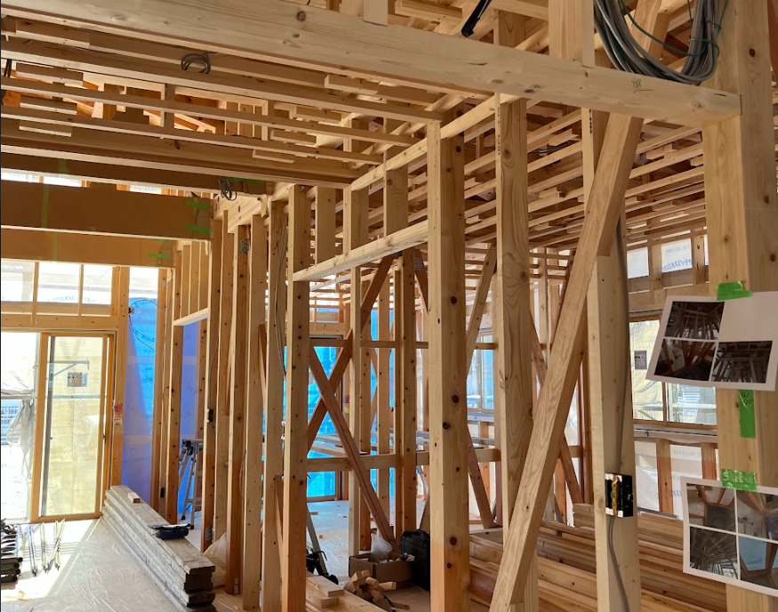

これで質問は終わりです。
お疲れ様でした！
結果にお進みください。

クイズに挑戦
（所要時間2分）
1問目 / 6問中
（所要時間：約2分）
質問テキスト
次の質問へ
TOPへ戻る
診断結果
6問中0問正解
正解率
0
%
あなたの家にホームインスペクションが
必要かチェックしてみましょう
必要度をチェックする
（所要時間 30秒）
TOPへ戻る
1問目 / 3問中
（所要時間：約30秒）
Q1.あなたの家は、どんな構造・工法で
建てる予定ですか？
A. 木造（在来工法や2×4など）
B. 鉄骨造（軽量鉄骨など）
C. 鉄筋コンクリート造（RC）
D. 工法がわからない
次へ
TOPへ戻る
2問目 / 3問中
（所要時間：約30秒）
Q2.住宅会社を教えてください
A. 大手ハウスメーカー
積水ハウス
大和ハウス工業
住友林業
ミサワホーム
セキスイハイム
パナソニック ホームズ
トヨタホーム
へーベルハウス（旭化成ホームズ）
三井ホーム
一条工務店
B. 地域の工務店
C. その他
戻る
次へ
TOPへ戻る
3問目 / 3問中
（所要時間：約30秒）
Q3.現在の状況を教えてください
漠然と家づくりを考え中
家づくり情報収集中
住宅会社と契約し、打ち合わせ中
着工済み
完成or引っ越し済み
その他
戻る
次へ
TOPへ戻る
診断結果が出ました！
LINE登録して結果を見る
LINEで登録する
TOPへ戻る
診断結果が出ました！
ホームインスペクション必要度
高
TOPへ戻る